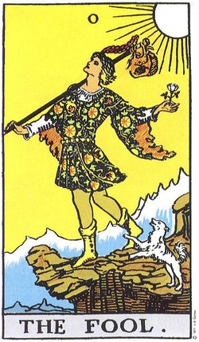

Una tirada diaria puede ser tan sencilla como detenerse unos minutos, respirar y formular una pregunta que sí puedas observar durante el día. En este MVP la propuesta es educativa y reflexiva: la carta acompaña la interpretación, pero la decisión sigue siendo de la persona.
1. Formula una pregunta abierta
Evita preguntas que dependan de una respuesta rígida como “sí” o “no”. En su lugar, usa preguntas como “¿qué actitud necesito observar hoy?” o “¿qué aprendizaje puede acompañarme?”.
2. Observa símbolos antes de buscar significados
Mira colores, personajes, dirección de la mirada y sensación general. Esa primera impresión ayuda a que la lectura no sea solamente memorizar palabras clave.
3. Registra una conclusión breve
Un diario simple puede incluir fecha, carta, pregunta, emoción inicial y aprendizaje. No es necesario escribir mucho: basta una observación honesta y concreta.